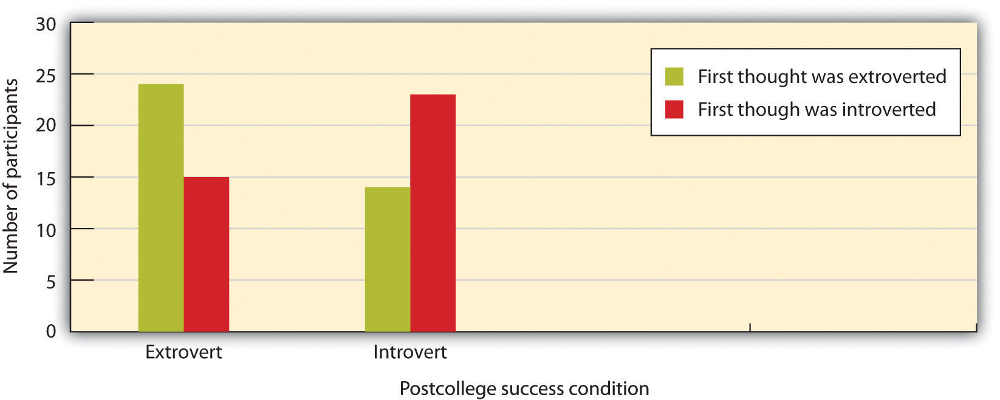
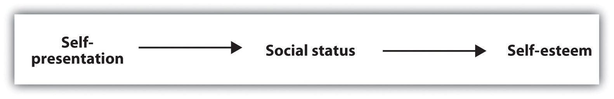
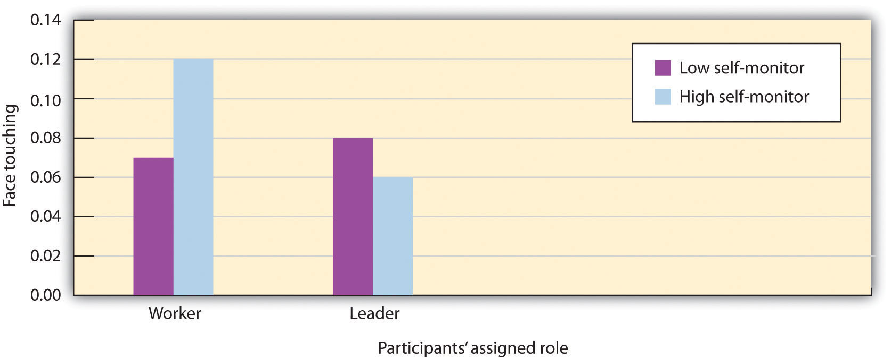

Although the self is partly determined by our thoughts about ourselves, we are also the product of our emotions. I am certain that Matt Harding dances, at least in part, because he likes dancing and because dancing makes him feel good. In fact, we all want to feel positively about ourselves, and we work hard to be able to do so.
Self-esteemThe positive or negative evaluations that we make of ourselves. refers to the positive (high self-esteem) or negative (low self-esteem) feelings that we have about ourselves. We experience the positive feelings of high self-esteem when we believe that we are good and worthy and that others view us positively. We experience the negative feelings of low self-esteem when we believe that we are inadequate and less worthy than others.
Our self-esteem is determined by many factors, including how well we view our own performance, our own appearance, and how satisfied we are with our relationships with other people (Tafarodi & Swann, 1995).Tafarodi, R. W., & Swann, W. B., Jr. (1995). Self-liking and self-competence as dimensions of global self-esteem: Initial validation of a measure. Journal of Personality Assessment, 65(2), 322–342. Self-esteem is in part a trait that is stable over time, such that some people have relatively high self-esteem and others have lower self-esteem. But our self-esteem is also a state that varies day to day and even hour to hour. When we have succeeded at an important task, when we have done something that we think is useful or important, or when we feel that we are accepted and valued by others, our self-concept will contain many positive thoughts and we will therefore have high self-esteem. When we have failed, done something harmful, or feel that we have been ignored or criticized, the negative aspects of the self-concept are more accessible and we experience low self-esteem.
Self-esteem can be measured using both explicit and implicit measures, and both approaches find that people tend to view themselves positively. One common self-report measure of self-esteem is the Rosenberg Self-Esteem Scale. Higher numbers on the scale indicate higher self-esteem, and the average score for college students who complete the scale is about 3 on a 1 to 4 scale, demonstrating that by and large, people have high self-esteem.
Please rate yourself on the following items by writing a number in the blank before each statement, where you
1 = Strongly Disagree 2 = Disagree 3 = Agree 4 = Strongly Agree
Note. (R) denotes an item that should be reverse scored. Subtract your response on these items from 5 before calculating the total. Data are from Rosenberg (1965).Rosenberg, M. (1965). Society and the adolescent self-image. Princeton, NJ: Princeton University Press.
One problem with measures such as the Rosenberg scale is that they can be influenced by the desire to portray the self positively. The observed scores on the Rosenberg scale are likely inflated because people naturally try to make themselves look as if they have very high self-esteem—maybe they fib a bit to make themselves look better than they really are to the experimenters and perhaps also to make themselves feel better.
More indirect measures of self-esteem have been created—measures that may provide a more accurate picture of the self-concept because they are less influenced by the desire to make a positive impression. Anthony Greenwald and Shelly Farnham (2000)Greenwald, A. G., & Farnham, S. D. (2000). Using the Implicit Association Test to measure self-esteem and self-concept. Journal of Personality and Social Psychology, 79(6), 1022–1038. used the Implicit Association Test to study the self-concept indirectly. Participants worked at a computer and were presented with a series of words, each of which they were to categorize in one of two ways. One categorization decision involved whether the words were related to the self (e.g., me, myself, mine) or to another person (other, them, their). A second categorization decision involved determining whether words were pleasant (joy, smile, pleasant) or unpleasant (pain, death, tragedy).
On some trials, the self words were paired with the pleasant items, and the other words with the unpleasant items. On other trials, the self words were paired with the unpleasant items, and the other words with the pleasant items. Greenwald and Farnham found that on average, participants were significantly faster at categorizing positive words that were presented with self words than they were at categorizing negative words that were presented with self words, suggesting, again, that people did have positive self-esteem. Furthermore, there were also meaningful differences among people in the speed of responding, suggesting that the measure captured individual variation in self-esteem.
Brett Pelham and his colleagues (Jones, Pelham, Mirenberg, & Hetts, 2002; Koole & Pelham, 2003; Pelham, Carvallo, & Jones, 2005)Jones, J. T., Pelham, B. W., Mirenberg, M. C., & Hetts, J. J. (2002). Name letter preferences are not merely mere exposure: Implicit egotism as self-regulation. Journal of Experimental Social Psychology, 38(2), 170–177; Koole, S. L., & Pelham, B. W. (Eds.). (2003). On the nature of implicit self-esteem: The case of the name letter effect. Mahwah, NJ: Lawrence Erlbaum Associates; Pelham, B. W., Carvallo, M., & Jones, J. T. (2005). Implicit egotism. Current Directions in Psychological Science, 14, 106–110. have taken still another approach to assessing self-esteem indirectly, by measuring a concept that they call implicit egoism. In their research, they have found that people prefer things that are associated with their own names to things that are not associated with their own names. More specifically, people prefer their own initials to the initials of other people, and prefer other people who share their initials to those who don’t. And Brendl, Chattopadhyay, Pelham, and Carvallo (2005)Brendl, C. M., Chattopadhyay, A., Pelham, B. W., & Carvallo, M. (2005). Name letter branding: Valence transfers when product specific needs are active. Journal of Consumer Research, 32, 405–416. found similar results for brand names, such that people are more likely to choose a brand when the brand name starts with letters from their names than when the brand name does not. Thus these indirect measures also came to the same conclusion that the direct measures do—most people have positive self-esteem in the sense that they regard themselves, and things associated with themselves, positively.
Because it is so important to have self-esteem, we naturally try to get and maintain it. One way is to be successful at what we do. When we get a good grade on a test, perform well in a sports match, or get a date with someone that we really like, our self-esteem naturally rises. One reason that most people have positive self-esteem is because we are generally successful at creating positive lives. When we fail in one domain, we tend to move on until we find something that we are good at. Most of us realize that we cannot hang out with the most attractive person on campus, and so we generally don’t set ourselves up for failure by trying to. We don’t always expect to get the best grade on every test or to be the best player on the team. Therefore, we are not surprised or that hurt when those things don’t happen. In short, we feel good about ourselves because we do a pretty good job at creating decent lives.
Processing Information to Enhance the Self
Although we are all quite good at creating positive self-esteem by doing positive things, it turns out that we do not stop there. The desire to see ourselves positively is strong enough that it leads us to seek out, process, and remember information in a way that allows us to see ourselves even more positively.
Sanitioso, Kunda, and Fong (1990)Sanitioso, R., Kunda, Z., & Fong, G. T. (1990). Motivated recruitment of autobiographical memories. Journal of Personality and Social Psychology, 59(2), 229–241. had students from Princeton University read about a study that they were told had been conducted by psychologists at Stanford University (the study was actually fictitious). The students were randomly assigned to two groups, such that one group read that the results of the research had showed that extroverts did better than introverts in academic or professional settings after graduating from college, while the other group read that introverts did better than extroverts on the same dimensions. The students then wrote explanations for why this might be true.
The experimenter then thanked the participants and led them to another room, where a second study was to be conducted (you will have guessed already that although the participants did not think so, the two experiments were really part of the same experiment). In the “second” experiment, participants were given a questionnaire that supposedly was investigating what different personality dimensions meant to people in terms of their own experience and behavior. The students were asked to list behaviors that they had performed in the past that related to the dimension of “shy” versus “outgoing”—a dimension that is very close in meaning to the introversion-extroversion dimension that they had read about in the first experiment.
The following figure shows the number of students in each condition who listed an extroverted behavior first, and the number who listed an introverted behavior first. You can see that the first memory listed by participants in both conditions tended to reflect the dimension that they had read was related to success according to the research presented in the first experiment. In fact, 62% of the students who had just learned that extroversion was related to success listed a memory about an extroverted behavior first, whereas only 38% of the students who had just learned that introversion was related to success listed an extroverted behavior first.
Figure 4.4 Enhancing the Self
Sanitioso, Kunda, and Fong (1990)Sanitioso, R., Kunda, Z., & Fong, G. T. (1990). Motivated recruitment of autobiographical memories. Journal of Personality and Social Psychology, 59(2), 229–241. found that students who had learned that extroverts did better than introverts after graduating from college tended to list extroverted memories about themselves, whereas those who learned that introverts did better than extroverts tended to list introverted memories.
It appears that the participants drew from their memories those instances of their own behavior that reflected the trait that had the most positive implications for their self-esteem—either introversion or extroversion, depending on experimental condition. The desire for positive self-esteem made events that were consistent with a positive self-perception more accessible, and thus they were listed first on the questionnaire.
Other research has confirmed this general principle—people attempt to create positive self-esteem whenever possible, even it if may involve distorting reality. We take credit for our successes, and we blame our failures on others. We remember our positive experiences, and we tend to forget the negative ones. We judge our likelihood of success and happiness as greater than our likelihood of failure and unhappiness. We think that our sense of humor and our honesty are above average, and that we are better drivers and less prejudiced than others. We also distort (in a positive way, of course) our memories of our grades, our performances on exams, and our romantic experiences. And we believe that we can control the events that we will experience to a greater extent than we really can (Crocker & Park, 2004).Crocker, J., & Park, L. E. (2004). The costly pursuit of self-esteem. Psychological Bulletin, 130, 392–414.
Although self-esteem comes in part from our personal accomplishments, it is also influenced by the social situation. Positive self-esteem occurs not only when we do well in our own eyes but also when we feel that we are positively perceived by the other people we care about. Think about Dancing Matt as an example—he may love to dance for himself, but he also seems to enjoy sharing his dancing with others. Perhaps Matt feels good about himself in part because he knows that other people like to watch him. Social statusThe extent to which we are viewed positively and esteemed by others. refers to the extent to which we are viewed positively and are esteemed by others.
Because it is so important to be seen as competent and productive members of society, people naturally attempt to present themselves as positively as they can to others. We attempt to convince others that we are good and worthy people by appearing attractive, strong, intelligent, and likable and by saying positive things to others (Jones & Pittman, 1982; Leary, 1995; Schlenker, 2003).Jones, E. E., & Pittman, T. S. (1982). Toward a general theory of strategic self-presentation. In J. Suls (Ed.), Psychological perspectives on the self (Vol 1, pp. 231–262). Hillsdale, NJ: Erlbaum; Leary, M. R. (1995). Self-presentation: Impression management and interpersonal behavior. Madison, WI: Brown & Benchmark Publishers; Schlenker, B. R. (2003). Self-presentation. In M. R. Leary, J. P. Tangney, M. R. E. Leary, & J. P. E. Tangney (Eds.), Handbook of self and identity (pp. 492–518). New York, NY: Guilford Press. The tendency to present a positive self-image to others, with the goal of increasing our social status, is known as self-presentationThe tendency to portray a positive self-image to others, with the goal of increasing our social status., and it is a basic and natural part of everyday life. Again, the dynamic interplay between the person and the situation is apparent—our individual self-esteem is influenced in large part by how we think others perceive us.
One way to self-present is to display our positive physical characteristics. The reason that so many of us spend money on teeth whiteners, hair dye, face-lifts, and fashion accessories of every sort is in part the result of the desire to self-present—we want to look good to others so that they will like us. We can also earn status by collecting expensive possessions such as fancy cars and big houses and by trying to associate with high-status others. And we may also gain status by attempting to dominate or intimidate others in social interaction. People who talk more and louder and those who initiate more social interactions are afforded higher status. A businessman who greets others with a strong handshake and a smile and people who speak out strongly for their opinions in group discussions may be attempting to do so as well. In some cases, people may even resort to aggressive behavior, such as bullying, in attempts to improve their status (Baumeister, Smart, & Boden, 1996).Baumeister, R. F., Smart, L., & Boden, J. M. (1996). Relation of threatened egotism to violence and aggression: The dark side of high self-esteem. Psychological Review, 103(1), 5–34.
You might not be surprised to hear that men and women use different approaches to self-presentation. Men are more likely to present themselves in an assertive way, by speaking and interrupting others, by visually focusing on the other person when they are speaking, and by leaning their bodies into the conversation. Women, on the other hand, are more likely to be modest—they tend to create status by laughing and smiling, and by reacting more positively to the statements of others (Dovidio, Brown, Heltman, Ellyson, & Keation, 1988).Dovidio, J. F., Brown, C. E., Heltman, K., Ellyson, S. L., & Keation, C. F. (1988). Power displays between women and men in discussions of gender linked tasks: A multichannel study. Journal of Personality and Social Psychology, 55, 580–587.
These gender differences are probably in large part socially determined as a result of the different reinforcements that men and women receive for using self-presentational strategies. Speaking out and acting assertively is more effective for men than it is for women because our stereotypes about the appropriate behavior for women do not include assertive behavior. Women who act assertively may be seen negatively because they violate our expectations about appropriate behavior. In fact, because self-presenting in an assertive way is not as effective for women, it can be difficult for women to gain power in organizations (Carli, 2001).Carli, L. L. (2001). Gender and social influence. Journal of Social Issues, 57(4), 725–741. But the observed gender differences in self-presentation are also due in part to the presence of testosterone, which is higher in men. Both women and men with more testosterone are more assertive (Baker, Pearcey, & Dabbs, 2002; Dabbs, Hargrove, & Heusel, 1996).Baker, L. A., Pearcey, S. M., & Dabbs, J. M., Jr. (2002). Testosterone, alcohol, and civil and rough conflict resolution strategies in lesbian couples. Journal of Homosexuality, 42(4), 77–88; Dabbs, J. M., Jr., Hargrove, M. F., & Heusel, C. (1996). Testosterone differences among college fraternities: Well-behaved vs. rambunctious. Personality and Individual Differences, 20(2), 157–161.
Different self-presentation strategies may be used to create different emotions in other people, and the use of these strategies may be evolutionarily selected because they are successful (Kessler & Cohrs, 2008).Kessler, T., & Cohrs, J. C. (2008). The evolution of authoritarian processes: Fostering cooperation in large-scale groups. Group Dynamics: Theory, Research, and Practice, 12, 73–84. Edward Jones and Thane Pittman (1982)Jones, E. E., & Pittman, T. S. (1982). Toward a general theory of strategic self-presentation. In J. Suls (Ed.), Psychological perspectives on the self (Vol 1, pp. 231–262). Hillsdale, NJ: Erlbaum. described five self-presentation strategies, each of which is expected to create a resulting emotion in the other person.
No matter who is using it, self-presentation can easily be overdone, and when it is, it backfires. People who overuse the ingratiation technique and who are seen as obviously and strategically trying to impress or get others to like them are not liked. Nor are people who exemplify or self-promote by boasting or bragging, particularly if that boasting does not appear to reflect their true characteristics (Wosinska, Dabul, Whetstone-Dion, & Cialdini, 1996).Wosinska, W., Dabul, A. J., Whetstone-Dion, R., & Cialdini, R. B. (1996). Self-presentational responses to success in the organization: The costs and benefits of modesty. Basic and Applied Social Psychology, 18(2), 229–242. And using intimidation is also likely to backfire—acting more modestly may often be more effective. Again, the point is clear—we may want to self-promote with the goal of getting others to like us, but we must also be careful to take into consideration the point of view of the other person as well.
Figure 4.5
We use self-presentation to try to convince others that we are good and worthy people. When we are successful in our self-presentation and other people view us positively, we have high social status. When we perceive that we have high social status, we experience positive self-esteem.
In summary, although the variables of self-esteem, social status, and self-presentation are separate concepts with different meanings, they all are related, as you can see in Figure 4.5. We feel good about ourselves (we have high self-esteem) when we have high social status. And we can gain status by convincing other people that we are good people (self-presentation). Because these concepts are important parts of everyday life, we will return to them frequently throughout this book.
Although the desire to present the self favorably is a natural part of everyday life, both person and situation factors influence the extent to which we do it. For one, we are more likely to self-present in some situations than in others. When we are applying for a job or meeting with others whom we need to impress, we naturally become more attuned to the social aspects of the self, and our self-presentation increases.
And there are also individual differences. Some people are naturally better at self-presentation—they enjoy doing it and are good at it—whereas others find self-presentation less desirable or more difficult. An important individual-difference variable known as self-monitoring has been shown, in hundreds of studies, to have a major impact on self-presentation. Self-monitoringThe tendency to be both motivated and capable of regulating our behavior to meet the demands of social situations. refers to the tendency to be both motivated and capable of regulating our behavior to meet the demands of social situations (Gangestad & Snyder, 2000). Gangestad, S. W., & Snyder, M. (2000). Self-monitoring: Appraisal and reappraisal. Psychological Bulletin, 126(4), 530–555. High self-monitors are particularly good at reading the emotions of others and therefore are better at fitting into social situations—they agree with statements such as “In different situations and with different people, I often act like very different persons” and “I guess I put on a show to impress or entertain people.” Low self-monitors, on the other hand, generally act on their own attitudes, even when the social situation suggests that they should behave otherwise. Low self-monitors are more likely to agree with statements such as “At parties and social gatherings, I do not attempt to do or say things that others will like” and “I can only argue for ideas that I already believe.” In short, high self-monitors try to get other people to like them by behaving in ways that the others find desirable (they are good self-presenters), whereas low self-monitors do not.
In one experiment that showed the importance of self-monitoring, Cheng and Chartrand (2003)Cheng, C. M., & Chartrand, T. L. (2003). Self-monitoring without awareness: Using mimicry as a nonconscious affiliation strategy. Journal of Personality and Social Psychology, 85(6), 1170–1179. had college students interact individually with another student (actually an experimental confederate) whom they thought they would be working with on an upcoming task. While they were interacting, the confederate subtly touched her own face several times, and the researchers recorded the extent to which the student participant mimicked the confederate by also touching his or her own face.
The situational variable was the status of the confederate. Before the meeting began, and according to random assignment to conditions, the students were told either that they would be the leader and that the other person would be the worker on the upcoming task, or vice versa. The person variable was self-monitoring, and each participant was classified as either high or low on self-monitoring on the basis of his or her responses to the self-monitoring scale.
Figure 4.6
High self-monitors imitated more when the person they were interacting with was of higher (versus lower) status. Low self-monitors were not sensitive to the status of the other. Data are from Cheng and Chartrand (2003).Cheng, C. M., & Chartrand, T. L. (2003). Self-monitoring without awareness: Using mimicry as a nonconscious affiliation strategy. Journal of Personality and Social Psychology, 85(6), 1170–1179.
As you can see in Figure 4.6, Cheng and Chartrand found an interaction effect: The students who had been classified as high self-monitors were more likely to mimic the behavior of the confederate when she was described as being the leader than when she was described as being the worker, indicating that they were “tuned in” to the social situation and modified their behavior to appear more positively. Although the low self-monitors did mimic the other person, they did not mimic her more when the other was high, versus low, status. This finding is quite consistent with the idea that the high self-monitors were particularly aware of the other person’s status and attempted to self-present more positively to the high-status leader. The low self-monitors, on the other hand—because they feel less need to impress overall—did not pay much attention to the other person’s status.
Our discussion to this point suggests that people will generally try to view themselves in the most positive possible light and to present themselves to others as favorably as they can. We emphasize our positive characteristics, and we may even in some cases distort information—all to help us maintain positive self-esteem.
There is a negative aspect to having too much self-esteem, however, at least when the esteem is unrealistic and undeserved. NarcissismA personality trait characterized by overly high self-esteem, self-admiration, and self-centeredness. is a personality trait characterized by overly high self-esteem, self-admiration, and self-centeredness. Narcissists agree with statements such as the following:
People do not normally like narcissists because they are unrealistic and think only of themselves. Narcissists make bad romantic partners—they behave selfishly and are always ready to look for someone else who they think will be a better mate, and they are likely to be unfaithful (Campbell & Foster, 2002; Campbell, Rudich, & Sedikides, 2002).Campbell, W. K., & Foster, C. A. (2002). Narcissism and commitment in romantic relationships: An investment model analysis. Personality and Social Psychology Bulletin, 28, 484–495; Campbell, W. K., Rudich, E., & Sedikides, C. (2002). Narcissism, self-esteem, and the positivity of self-views: Two portraits of self-love. Personality and Social Psychology Bulletin, 28, 358–368. Narcissists may also be obnoxious, continually interrupting and bullying others, and they may respond very negatively to criticism. Although they make positive first impressions, people eventually see narcissists less positively than narcissists see themselves, in part because they are perceived as arrogant. Perhaps surprisingly, narcissists seem to understand these things about themselves, although they engage in the behaviors anyway (Carlson, Vazire, & Oltmanns, 2011).Carlson, E. N., Vazire, S., & Oltmanns, T. F. (2011). You probably think this paper’s about you: Narcissists’ perceptions of their personality and reputation. Journal of Personality and Social Psychology, 101(1), 185–201.
Does High Self-Esteem Cause Happiness or Other Positive Outcomes?
Teachers, parents, school counselors, and people in general frequently assume that high self-esteem causes many positive outcomes for people who have it and therefore that we should try to increase it in ourselves and others. Perhaps you agree with the idea that if you could increase your self-esteem, you would feel better about yourself and therefore be able to study harder, get better grades, or attract a more desirable mate. If you do believe that, you would not be alone. In 1986, the state of California funded a task force under the premise that raising self-esteem would help solve many of the state’s problems, including crime, teen pregnancy, drug abuse, school underachievement, and pollution.
Roy Baumeister and his colleagues (Baumeister, Campbell, Krueger, & Vohs, 2003)Baumeister, R. F., Campbell, J. D., Krueger, J. I., & Vohs, K. D. (2003). Does high self-esteem cause better performance, interpersonal success, happiness, or healthier lifestyles? Psychological Science in the Public Interest, 4(1), 1–44. recently conducted an extensive review of the research literature to determine whether having high self-esteem was as helpful as many people seem to think it is. They began by assessing which variables were correlated with high self-esteem and then considered the extent to which high self-esteem caused these outcomes.
Baumeister and his colleagues found that high self-esteem does correlate with many positive outcomes. People with high self-esteem get better grades, are less depressed, feel less stress, and may even live longer than those who view themselves more negatively. The researchers also found that high self-esteem was correlated with greater initiative and activity, such that high self-esteem people just did more things. People with high self-esteem are more likely to be bullies, but they are also more likely to defend victims against bullies, compared with people with low self-esteem. People with high self-esteem are more likely to initiate interactions and relationships. They are more likely to speak up in groups and to experiment with alcohol, drugs, and sex. High self-esteem people also work harder in response to initial failure and are more willing to switch to a new line of endeavor if the present one seems unpromising. Thus having high self-esteem seems to be a valuable resource—people with high self-esteem are happier, more active, and in many ways better able to deal with their environment.
On the other hand, Baumeister and his colleagues also found that people with high self-esteem may sometimes delude themselves. High self-esteem people believe that they are more likable and attractive, have better relationships, and make better impressions on others than people with low self-esteem. But objective measures show that these beliefs are often distortions rather than facts. Furthermore, people with overly high self-esteem, particularly when it is accompanied by narcissism, defensiveness, conceit, and the unwillingness to critically assess one’s potential negative qualities, have been found to engage in a variety of negative behaviors (Baumeister, Smart, & Boden, 1996).Baumeister, R. F., Smart, L., & Boden, J. M. (1996). Relation of threatened egotism to violence and aggression: The dark side of high self-esteem. Psychological Review, 103(1), 5–34.
Todd Heatherton and Kathleen Vohs (2000)Heatherton, T. F., & Vohs, K. D. (2000). Interpersonal evaluations following threats to self: Role of self-esteem. Journal of Personality and Social Psychology, 78, 725–736. found that when people with extremely high self-esteem were forced to fail on a difficult task in front of a partner, they responded by acting more unfriendly, rudely, and arrogantly than did students with lower self-esteem. And research has found that children who inflate their social self-worth—those who think that they are more popular than they really are and who thus have unrealistically high self-esteem—are also more aggressive than the children who do not show such narcissistic tendencies (Sandstrom & Herlan, 2007; Thomaes, Bushman, Stegge, & Olthof, 2008).Sandstrom, M. J., & Herlan, R. D. (2007). Threatened egotism or confirmed inadequacy? How children’s perceptions of social status influence aggressive behavior toward peers. Journal of Social and Clinical Psychology, 26(2), 240–267; Thomaes, S., Bushman, B. J., Stegge, H., & Olthof, T. (2008). Trumping shame by blasts of noise: Narcissism, self-esteem, shame, and aggression in young adolescents. Child Development, 79(6), 1792–1801. If you are thinking like a social psychologist, these findings may not surprise you—narcissists are all about self-concern, with little concern for others, and we have seen many times that other-concern is a necessity for satisfactory social relations.
Despite the many positive variables that relate to high self-esteem, when Baumeister and his colleagues looked at the causal role of self-esteem is they found little evidence that high self-esteem caused these positive outcomes. For instance, although high self-esteem is correlated with academic achievement, it is more the result than the cause of this achievement. Programs designed to boost the self-esteem of pupils have not been shown to improve academic performance, and laboratory studies have generally failed to find that manipulations of self-esteem cause better task performance.
In the end then, Baumeister and his colleagues concluded that programs designed to boost self-esteem should be used only in a limited way and should not be the only approach taken. Raising self-esteem will not make young people do better in school, obey the law, stay out of trouble, get along better with other people, or respect the rights of others. And these programs may even backfire, if the increased self-esteem creates narcissism or conceit. Baumeister and his colleagues suggested that attempts to boost self-esteem should only be carried out as a reward for good behavior and worthy achievements, and not simply to try to make children feel better about themselves.
Although we naturally desire to have social status and high self-esteem, we cannot always promote ourselves without any regard to the accuracy of our self-characterizations. If we consistently distort our capabilities, and particularly if we do this over a long period of time, we will just end up fooling ourselves and perhaps engaging in behaviors that are not actually beneficial to us. One of my colleagues has a son in high school who loves to think that he is an incredible golfer who could compete on the professional golf tour with the best golfers in the world. The problem, however, is that he’s actually only a pretty average golfer. His parents are worried about him because although they realize that his high self-esteem might propel him to work harder at this sport, and although he certainly enjoys thinking positively about himself, he may also be setting himself up for long-term failure. How long can he continue to consider himself in this overly positive way before the reality comes crashing down on him that perhaps he really is not cut out for a life on the professional golf circuit and that he should consider doing something else? The hope is that it will not be too late to take up a more reasonable career when he does.
When we promote ourselves too much, although we may feel good about it in the short term, in the longer term the outcomes for the self may not be that positive. The goal of creating and maintaining positive self-esteem (an affective goal) must be tempered by the cognitive goal of having an accurate self-view (Kirkpatrick & Ellis, 2001; Swann, Chang-Schneider, & Angulo, 2007).Kirkpatick, L. A., & Ellis, B. J. (2001). Evolutionary perspectives on self-evaluation and self-esteem. In M. Clark & G. Fletcher (Eds.), The Blackwell Handbook of Social Psychology, Vol. 2: Interpersonal processes (pp. 411–436). Oxford, UK: Blackwell; Swann, W. B., Jr., Chang-Schneider, C., & Angulo, S. (2007). Self-verification in relationships as an adaptive process. In J. Wood, A. Tesser, & J. Holmes (Eds.), Self and relationships. New York, NY: Psychology Press. Although we may prefer to hold highly favorable views of ourselves, more accurate views would almost certainly be more useful because accurate information is likely to lead to better decision making. Indeed, research suggests that people do not only self-enhance; they also desire to be known for who they believe they are, even if what they are is not all good. When people enter into relationships with others who verify their self-views, for example, they feel more intimate with the other person and more are satisfied with the interaction than they do with partners who are always positive toward them (Swann, De La Ronde, & Hixon, 1994; Swann & Pelham, 2002).Swann, W. B., Jr., De La Ronde, C., & Hixon, J. G. (1994). Authenticity and positivity strivings in marriage and courtship. Journal of Personality and Social Psychology, 66, 857–869; Swann, W. B., Jr., & Pelham, B. W. (2002). Who wants out when the going gets good? Psychological investment and preference for self-verifying college roommates. Journal of Self and Identity, 1, 219–233. The desire for self-verifying feedback is so powerful that people who have negative self-esteem may in some cases work to verify those negative views by avoiding positive feedback in favor of negative, but self-verifying, feedback (Swann, Rentfrow, & Guinn, 2002).Swann, W. B., Jr., Rentfrow, P. J., & Guinn, J. (2002). Self-verification: The search for coherence. In M. Leary & J. Tangney (Eds.), Handbook of self and identity. New York: Guilford Press.
In some cases, the cognitive goal of obtaining an accurate picture of ourselves and our social world and the affective goal of gaining positive self-esteem work hand in hand. Getting the best grade in the class on an important exam produces accurate knowledge about our skills in the domain as well as giving us some positive self-esteem. In other cases, the two goals are incompatible. Doing more poorly on an exam than we had hoped produces conflicting, contradictory outcomes. The poor score provides accurate information about the self—namely, that we have not mastered the subject—but at the same time makes us feel bad. It is in these cases that we must learn to reconcile our self-concept with our self-esteem. We must be able to accept our negative aspects and to work to overcome them. The ability to balance the cognitive and the affective features of the self helps us create efficient and effective behavior.
Jennifer Crocker and Lora Park (2004)Crocker, J., & Park, L. E. (2004). The costly pursuit of self-esteem. Psychological Bulletin, 130, 392–414. have noted still another cost of our attempts to inflate our self-esteem: We may spend so much time trying to enhance our self-esteem in the eyes of others—by focusing on the clothes we are wearing, impressing others, and so forth—that we have little time left to really improve ourselves in more meaningful ways. And in some extreme cases, people experience such strong needs to improve their self-esteem and social status that they act in assertive or dominant ways in order to gain it. As in many other domains, then, having positive self-esteem is a good thing, but we must be careful to temper it with a healthy realism and a concern for others.